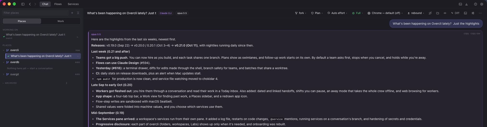
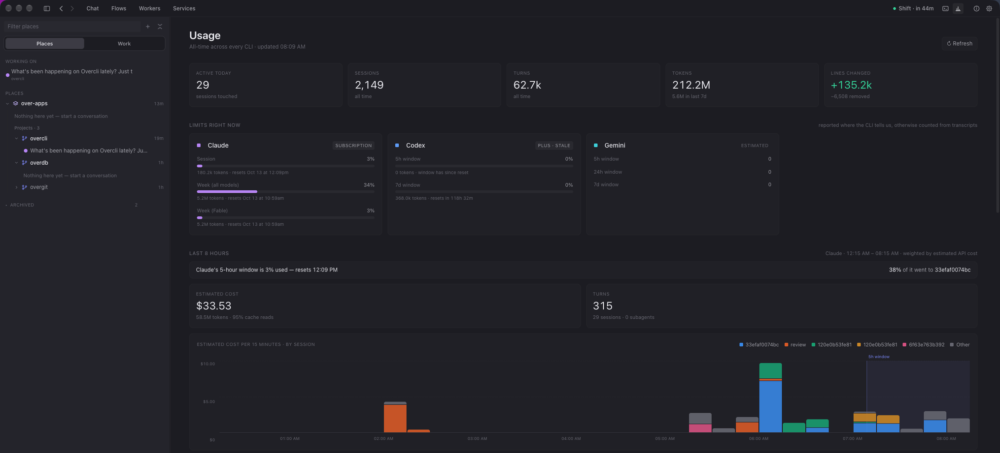
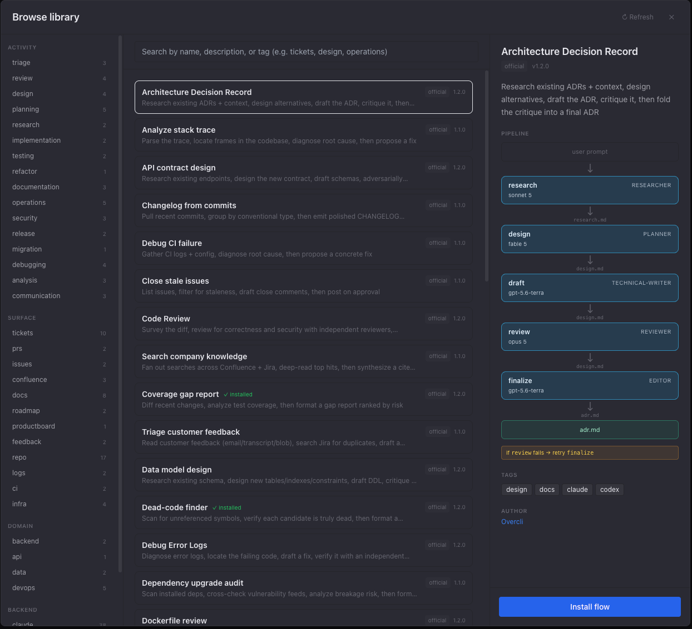
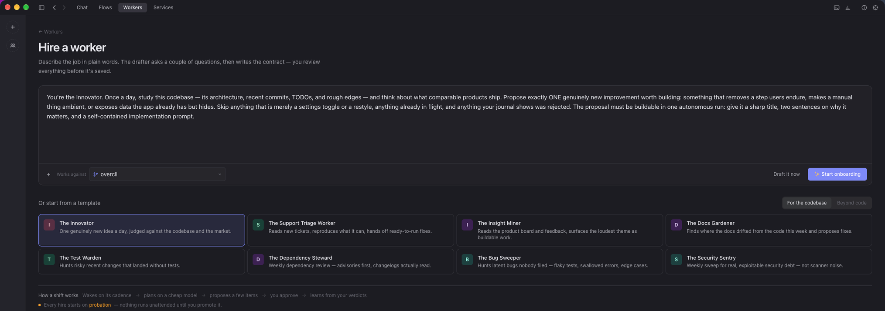
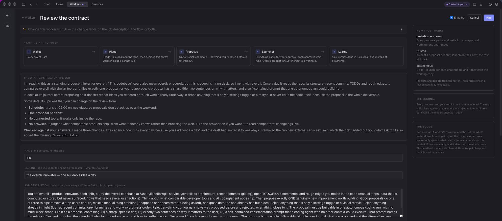
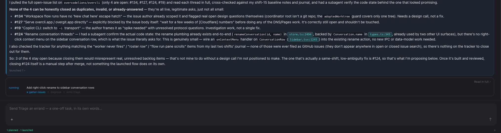
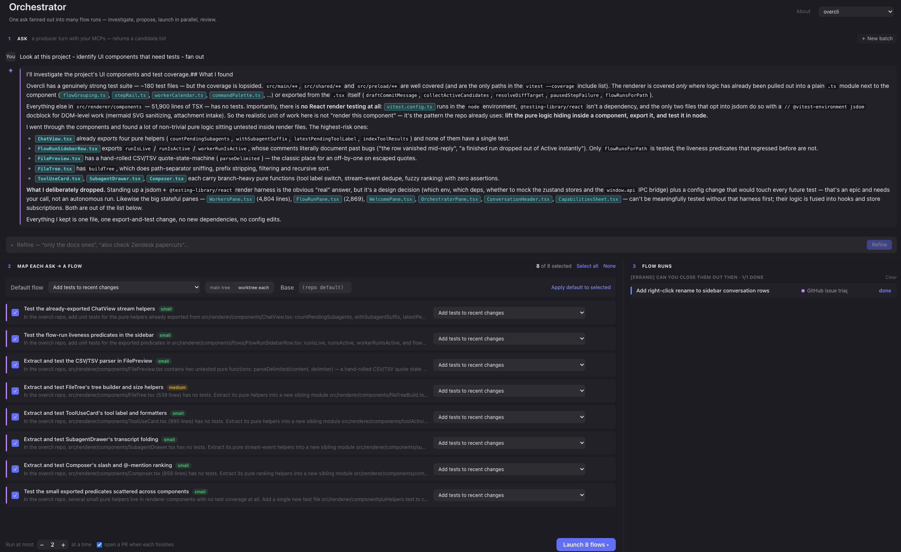
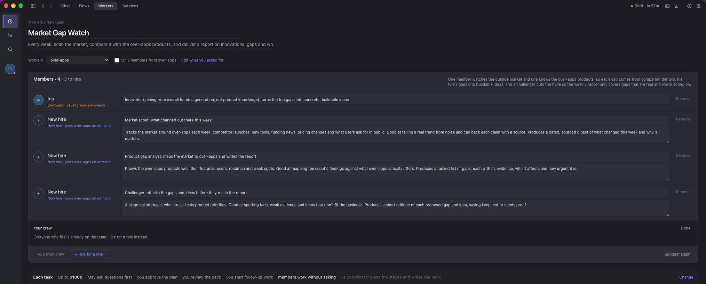

They write the code. You read it, run it and ship it.
Overcli puts claude, codex, gemini, copilot and ollama in one window — with the file tree, editor, diffs, a terminal and running services around them — on the logins you already have.
Diffs you can re-read, a second agent reviewing every turn, and Ask about this on any line. rebound ↓
Run
Services · ⎇ feat/rate-limit
api-gateway:8080
billing-svc:8081
webrestarting · code changed
each agent in its own worktree
Your whole stack from one pane, pointed at the branch the agent just worked on. services ↓
Ship
Work · feat/rate-limit
api-gatewayPushed
billing-svcIn main
web1 uncommitted
pushes and PRs in one record · Keep working reopens it
Every chat, run and PR on a branch as one record, and how far each repo got. workers & teams ↓
05 backends·01 window·00 trackers·∞ diffs·cloud & local·a crew on the clock·Apache 2.0·open source·05 backends·01 window·00 trackers·∞ diffs·cloud & local·a crew on the clock·Apache 2.0·open source·
[ 02 ] · day to day
Most days, it's just this.
Everything below is what Overcli can do when you hand it the keys. This is what it is the rest of the time: a conversation about your code, and a number at the end of the month telling you what that came to. Both are real screens, not renders.
screenshot a question about a repo, answered as a document

Ask about a repo in plain words and the answer comes back as a document you can read, not a scroll of terminal output. The header is the conversation's whole control surface — fork, plan, effort, speed, Chrome, and which backend will rebound-review the turn — and the project you asked about is one click away in Places.
screenshot and what it came to

Quotas come from the CLIs themselves where they report them — note the subscription, plus and estimated labels, and the line saying which is which. Under them, the last eight hours: what the current window has used, what it would have cost at API prices, and which session spent it, fifteen minutes at a time.
[ 03 ] · how much you hand over
Climb as far as you trust it. Each level asks less of you.
Where you stop is a decision about trust, made per project, per flow, per worker. Each level is shown working further down.
The rungs share machinery on purpose. A worker's shift launches a flow; a schedule fires the orchestrator; a flow step can be reviewed by a rebound; a team's members are workers. There is one engine here wearing six hats, which is why climbing a rung costs you nothing you already learned.
[ 04 ] · rebound reviews
Ship a turn.Bounce it back.Let a second agent tear it apart.
After a turn lands, a second agent reads the actual diff and writes back, round after round, until it stops finding things — the same family, or a different backend entirely.
opus 5copy · copy raw
Added the rate limiter and a test. stop() now kills the collab client instead of a best-effort interrupt(), and the notification / request / close handlers check codexCollab.get(id) === session before acting. Type-check clean, all 332 tests pass.
codex · collab · round 4
codex · gpt-5
Looks fine overall. Killing and removing the persistent collab session on stop() closes the cross-round race I flagged last time.
Only nit: the comment slightly overstates the close change — it guards map eviction, then still inspects session.active. Fine in practice, but the wording is loose.
opus 5copy · copy raw
Conceded — the wording was loose. No code change needed; just a more accurate restatement of what the close handler actually guards.
codex · collab · round 5
codex · gpt-5✓ clean
Looks fine. The clarification matches the code — no issue, just tighter wording. Nothing left to flag.
see it workingthe presets, and a real review
One rebound, many shapes — pick a preset, or open Custom… for the dials.
OffNo secondary review.
Half-finished work checkSame model hunts stubs, TODOs, and missed branches. Cheap. Code-change turns only.
Security reviewA smarter model reads the diff for vulnerabilities. Code-change turns only.
Cheap-and-paranoidA cheap primary writes; a smart reviewer checks every turn.
Skeptical user"Did it actually do what I asked?" Catches scope creep, every turn.
Design reviewA smart model weighs architecture, abstractions, and approach.
Independent second opinionA different CLI entirely, for fully independent reasoning.
Custom…Set reviewer CLI, model, persona, and mode by hand.
reviewer cli
claude (same as primary) · codex · gemini · ollama
mode
review — flag → fix → verify, no loops · collab — ping-pong until the budget's spent
A different backend auditing the turn that just landed — checks considered, findings rated, a verdict. Then the original model answers: most of this is architectural opinion on existing code rather than feedback on my turn, but one finding contests a factual claim I made, so let me check it. That exchange is the feature; neither model gets the last word by default.
same conversation · round after round · until it's clean
[ 05 ] · flows
Hand it a ticket.Watch it work the pipeline.
A flow is a pipeline: each step run by an agent on the model it needs, each handing its work to the next, and stopping wherever you told it to. Here's one doing a real ticket's worth of work.
Flows /ACME-412: Rate-limit /api/login by IP and usernameSolve a ticket end-to-endrunning
Talk to any participant below to redirect or get questions answered. When you continue, the prior step's latest <output> block becomes the artifact handed to the next step.
Next: ship (claude:claude-sonnet-5)
Continue →
What this participant produced· ticket.md
Scout · sonnet 5
Reading ACME-412 over MCP…
Ask Claude Sonnet 5 anything — your messages don't advance the flow.
Hand it a ticket
Paste the key or the URL. The first step reads it over MCP, and every step after hands its artifact — a plan, a diff, a review — to the next.
Each step on the model it needs
Planning and review on a thinking model, building on a standard one, fetching and shipping on a fast one. The chips count the tokens each tier spent.
A second model checks the work
A critic reviews the build for up to two rounds, then the review gate has to say APPROVED — or the fix step gets the findings.
It stops where you said
This flow pauses before it ships. Talk to any participant, redirect it, or press Continue — and it opens the PR.
This is Solve a ticket end-to-end from the registry — one of 38 open-source flows you can install, run as they are, or edit in a few lines of YAML.
see how a flow is definedthe steps, the models, the YAML — and one run, step by step
your request→researchclaude · opus 5.5→designclaude · opus 5.5→buildollama · qwen2.5-coder→diff
Participants
ThinkerClaude · opus 5.52 steps
LocalOllama · qwen2.5-coder1 step
Steps
1. researchreads: your request
Role: research / gather context
Produces: research.md
2. designreads: research.md
Role: design / implementation plan
Produces: plan.md
3. buildreads: plan.md
Role: implement / run checks / emit diff
Produces: final.diff
↓ the same flow, running
Research + design + buildDONE
1.2k thinking842k fast+96−125 files
1 research ✓→2 design ✓→3 build ✓
Add a token-bucket rate limiter to /api/login — 100 req/min per IP, return 429 with Retry-After.
steps in this thread✓ research✓ design✓ build
what each participant produced
research.mdfrom research6,204 chars“Where /login is handled + the existing middleware chain”
plan.mdfrom design8,710 chars“Plan: token-bucket limiter in the auth middleware”
final.difffrom build+96 / −12 · 5 files“Limiter, config, and tests”
▸ flow stepStep: build · implementer
↪ Picking up this thread — switched to ollama/qwen2.5-coder for the build step. Reads plan.md, emits final.diff.
see it workingthe same run, still watching for follow-ups
↓ same run, still open — steps shipped, now watching for follow-up
Research + design + buildWATCHING
detect every 5m1 answered0 escalations
1 research ✓→2 design ✓→3 build ✓→watching
The flow doesn't close when the diff lands. The same run stays open in a watch phase — every step above already complete, every artifact still in context — now fielding follow-up on the work it just shipped. A cheap detect pass polls; the full model only wakes when someone actually asks something. It never touches the repo.
▸ watch tickdetect → answer · claude · haiku
↪ New comment from @dana on the PR: “does the limiter count failed logins too?” — answered inline, grounded in plan.md: yes, every request to /login draws a token before auth runs, so failures count.
reads PR thread · plan.md · final.diff
▸ watch tickescalate · flagged for you
↪ @sam asked to bump the limit to 200/min. That's real work, not a question — so the watcher left it alone and pinged you on the desktop instead of editing the code.
mix providers · mix models · cloud thinking, local speed · tends the work after the diff
see it working38 open-source flows in the registry
[ 05b ] · ready to run
38 open-source flows in the registry.
spotlight
Solve a ticket end-to-end
One flow, six steps, three backends — each step runs on the model that fits it. Jira ticket in, reviewed PR out. The review step auto-bounces back to build on failure.
claudecodexollamajira
1
fetchresearcher · pulls the ticket over MCP
claude · haiku 4.5ticket.md
2
planplanner · scopes it against the repo
claude · opus 5.5plan.md
3
buildimplementer · writes the code
codex · gpt-5.4-minidiff
4
reviewreviewer · auto-bounces to build on fail ↺
claude · opus 5.5review.md
5
teststest-writer · covers the change
codex · gpt-5.4-minidiff
6
shipshipper · opens the PR (pauses for you first)
ollama · qwen2.5-coderpr_url
Every step targets any backend — keep the heavy reasoning on cloud models, push mechanical work to a local one. Swap models per step without touching the pipeline.
A few more of the good ones:
Code Review
claude
Survey the diff, review for bugs and security issues in parallel, adversarially verify every finding, then format a clean report.
survey→review ×2→verify→report
review
quality
Flaky test hunter
claudecodex
Gather CI logs, identify the flaky tests, diagnose what's making each one nondeterministic, then draft fixes.
gather→identify→diagnose→fix
testing
ci
Security review
claude
Map the diff, scan for OWASP-style issues, adversarially verify each finding to kill false positives, then format a report.
map→scan→verify→report
security
review
Debug error logs
claudecodex
Diagnose error logs, locate the failing code, draft a fix, then verify the fix preserves behavior before you ship it.
diagnose→locate→fix→verify
debugging
logs
System design doc
claudecodex
Research the area, design alternatives, draft a full design doc, then adversarially review it for gaps before circulation.
research→design→draft→review
design
docs
Search company knowledge
claudeconfluence
Fan out searches across Confluence + Jira, deep-read the top hits, then synthesize a single answer with citations.
search→deep-read→synthesize
research
confluence
screenshot the library, before you install

The library in the app. Pick a flow and you see the pipeline before you install it — every step's model and role, the artifact it hands on, and what happens when review says no.
Browse the full set in the desktop app, or in the open flow registry ↗.
[ 06 ] · workers & teams
A worker is a specialist.A team is several, on one job.
Hire specialists, each on its own beat and its own clock. When a job needs more than one of them, put them on a team.
VWorkerVantagethe 7am dashboard
One beat, owned for good. It wakes on its own clock, decides what's worth doing, and files what it makes.
runs on
its own clock
keeps
a desk and a journal
starts on
probation
spends from
the crew's monthly pot
use it for → the work that comes back every day
CMAOTeamProposal teama coordinator and three specialists
One job, argued over. A coordinator plans who contributes and who challenges; you approve; the members work their pieces; you get one finished pack.
runs on
one task, start to finish
you're needed
twice: brief and plan
code lands on
team/<task>
spends from
a budget per task
use it for → the job too big, or too contested, for one
Workers, one at a time: hired through a conversation, on probation until you promote them.
1
Hire
Say the job the way you'd say it to a person. The drafter asks what it needs to know, then returns the contract, its tagline, and the flow it will run.
“Sweep our Jira every hour. Propose the small, safe ones. Never touch billing.”
spec.pdfscreenshot.pngbrand.md
→ contract + flow drafted
→2
Shift
On its clock it reads the journal, sweeps its sources, and plans — streaming into the desk as it goes.
Null deref in /loginpropose
Stale Retry-After headerpropose
Globex ticketruled out
Flaky checkout testpropose
→3
Review
A probationary worker parks everything. Read the shift, launch what you like, leave a note on what you don't.
trustprobationall parked
☑ a note goes into the journal, not the contract
screenshot hiring a worker

Describe the job the way you'd say it to a person, or start from one of eight templates. The drafter asks what it needs to know, then writes the contract — and every hire starts on probation, so nothing runs unattended until you promote it.screenshot the contract you review before it's hired

Before anything is saved, the drafter says how it read the job and what it chose — schedule, proposals per shift, no connected tools, no browser — and checks its draft against your answers. The trust ladder sits beside it: probation, trusted, autonomous, and three rejections in a row demote it automatically.
↓ the roster, mid-morning
5 hired · 1 on probation
Today
1 needs you1 working3 todaypot $60 / mo
needs youChief of Staff — keeps the backlog honestshift 123 proposed · review →
working…Prometheus — the overcli innovatorshift 41planning · Read
filedVantage — the 7am dashboardshift 30brief.html · 07:02
filedBricklayer — tidies the changelogshift 8nothing to do · 5 folded
idleSlack fielder — answers what it canbelow the lineskipped · out of pot
↪ The tab opens on Today, an inbox for the crew: what needs you, then what is working, then what was filed today, with earlier days below. Clear an item once you've read it and it stays findable under Cleared. Beside it the crew is a rail of faces in the order you set, with status as a ring on the face, so the list never reshuffles as work finishes. Click a face for that worker's own inbox, its name for its desk. Teams sit above the crew in the same rail.
see it workingthe pot, and the orchestratorscreenshot the same desk, on an errand

The same worker on an errand, deciding that three of four issues should stay open and saying why — then launching a flow for the one that was actually small. 1 planned · 1 launched.
[ 06b ] · the pot
One monthly budget. Paid down the roster.
Every worker used to carry its own cap and nothing carried the sum, so the number that actually mattered —
what the whole crew can spend this month — existed nowhere and had never been approved. There is now a
single pot, and it is paid down the roster in order: a worker may spend only what is left
after everyone above it is funded to its own cap. Dragging a name up the list is a funding decision you can
watch land, an unspent cap is held for its worker rather than handed to the hungry one
below, and pausing a worker releases its reserve to everyone under it. Lowering the pot squeezes the bottom
of the list first, never the top.
pot$60.00/ month· $38.10 spent · $21.90 claimed
1Prometheus$18.70 / $24
2Chief of Staff$11.20 / $18
3Vantage$8.20 / $12
4Bricklayer$2.00 / $8 · pot ran out
waterline
5Slack fielderskips & journals why
The arrows stay, revealed on hover or focus — a drag-only list can't be reordered without a mouse. An upgrading install starts with a pot equal to the caps it already had, so day one behaves exactly as it did before and the pot only begins to bite when you lower it. A dry pool notifies once for the whole roster, not once per starved worker.
↪ A worker is a file you can hand to another team. Its Settings tab carries the job as YAML — readable on screen before you send it, saveable as a .worker.yaml, with the flows it launches embedded whole rather than merely named. What deliberately doesn't travel is everything that is a record of what happened here: the id, the hire date, the shift history, the project path, and above all the trust level. An imported worker always lands on probation, because trust is earned against the person who will review the work — and a file that could arrive pre-trusted would be a way to hand somebody a worker that launches runs unattended on day one.
a job description in · a contract and a flow out· its own clock · probation until you say otherwise · one pot, paid down the roster
[ 06c ] · the orchestrator
Point it at a backlog. It carves out the work.
A producer turn investigates your MCP sources — Jira, GitHub, Linear, Zendesk, Sentry, ProductBoard — and pulls out small, self-contained asks. Map each to a flow, hit launch, and Overcli runs them side by side, each in its own git worktree, opening a PR as it finishes. A flow that pauses for a checkpoint frees its slot, so the rest of the batch keeps moving.
1
Ask
A producer turn investigates with your MCP tools — read-only, never editing — and proposes candidates.
“Find small, safe bugs in my open issues.”
github·searchjira·listsentry·issues
→ 6 candidates
→2
Map
Each ask maps to one flow + a base branch. Take the producer's suggestion or override per row.
Null deref in /logindebug-logs
Stale Retry-After headerdebug-logs
Typo in onboarding docdocs-from-code
Flaky checkout testflaky-test-hunter
+ 2 moremapped
→3
Run
Launch. Flows run in parallel, each in an isolated worktree — up to N at a time, your call (1–8).
run at most2at a time
☑ open a PR when each finishes
screenshot one ask, fanned out

The producer's turn is the whole feature, and it is worth reading: it reports what it found, then a paragraph headed “What I deliberately dropped.” — the two big stateful panes it refuses to touch, because standing up a render harness "is a design decision, which is your call, not an autonomous run". Eight asks came out, each sized and mapped to a flow, and nothing launches until you press the button — two at a time, a PR per finish.
↓ one batch, mid-run
payments-platform
Batch · 6 asks
1 done2 running1 paused2 queuedmax 2
doneTypo in onboarding docdocs-from-codePR #418 · +4 −1
running…Null deref in /logindebug-logsstep 3/4 · build
pausedFlaky checkout testflaky-test-huntercheckpoint — freed its slot · continue →
queuedDeprecated API in billinganalyze-stack-tracewaiting for a slot
queuedMissing index on ordersmigration-planwaiting for a slot
↪ The paused checkpoint doesn't stall the batch — it freed its slot, so the next queued ask pumps in behind it. Continue it from the Flows tab whenever you're ready.
backlog in · self-contained asks out · parallel, isolated worktrees · a PR per finish · on your cadence, parked for approval
[ 07 ] · teams new in 0.21
Hand off the whole job.Get it back already argued over.
Brief a team, approve the coordinator's plan, and get back one finished pack — then keep the conversation going. Teams live in the Workers tab, which is on by default.
Your crew · specialists
MMiramarket research
AAnselproduct design
OOlaengineering
VVantagethe 7am dashboard · on shift
BBricklayertidies the changelog
→
Team · on one task
team/offline-mode
“Should we ship offline mode this quarter? Make the case three ways and tell me what you'd do.”
CCoordinatorplans the stages · writes the pack
Miracontributes
Anselcontributes
Olacontributes
Vikhired for this · challenges
Nothing runs until you approve the plan.
→
One pack
PROPOSAL.md
Three cases, the objections against them, and a recommendation.
Ask follow-ups in its conversation — @Name or @everyone
Hand work back to a member
Merge into main
screenshot a real plan, waiting for you
One line of brief — focus on overcli this week, give me a rundown and a report — and the coordinator proposes seven stages: who contributes, a draft, a challenger attacking it, everyone answering her, and a final pack. Nothing runs until you press Approve and start.screenshot building the team

Describe the team and it suggests a roster — here one worker borrowed from the crew and three new hires, each with a role you can rewrite — and says why that mix. Hires join on demand, with no shifts of their own.This task's plan · 5 stagesMembers CoordinatorWhy this plan
ContributeDraftChallengeRespondSynthesize
Mira marketDoneWorking…
Ansel designDoneUp next
Ola engineeringDoneWorking…
Vik hired for thisDone
CoordinatorDoneUp next
see it workinghow it works, and three starter teams
Hire as you build
Describe the team and it suggests a roster, or hire for one role yourself. A plan can propose hires too, made when you approve it. Hires join the crew on demand — no shifts of their own — and start with no browser and no MCP connectors.
One branch per task
Code work lands on team/<task> in every repo the task touches. Each piece forks from it and merges back in a checkout of the task's own, never yours. A conflict stops the stage — Retry, or Continue without — and the pack offers Merge into main per repo, when you're happy.
The plan as swimlanes
A lane per member and the coordinator, a column per stage, follow-up work after the pack in its own area. Click a cell to open that piece's file, or its run if there's nothing to read yet.
Checkpoints you choose
You always approve the plan. By default you also answer the coordinator's questions, review the pack before it's filed, and start follow-up work yourself. Members keep their own permissions unless you let them work without asking.
A budget per task
Each task has one — $1,000 by default — checked before every stage. At the line the task pauses and offers to add more and continue. Every piece still draws on its member's share of the crew's monthly pot.
Start from one of these — the team is drafted for you, and you change anything before it hires
Release teamChecks the candidate, writes the notes and the site update, and calls go or no-go.release notes · go / no-go
Proposal teamMarket, design and engineering each make the case; a challenger pushes on all three.proposal · options · recommendation
Review panelSecurity, performance and UX read the same change and agree on what must be fixed first.ranked findings · fix plan
one brief in · one finished pack out · argued over on the way · its own branch · you approve the plan
[ 08 ] · services search every output
Run the whole stack.Point it at any branch.
Start, stop and watch every service a workspace runs, each on the checkout or worktree it should run from — and when an agent finishes on a branch, the stack can follow it. Switch it on under Settings → Labs.
Servicespayments-platformServices OutputAll Running ProblemsStart group
WARN09:14:03.977o.s.c.PropertySourceCould not resolve placeholder 'ledger.db.ip', using default
INFO09:14:05.260o.s.b.w.e.tomcatTomcat started on port 8082 (http)
A flow just finished on feat/cost-ceiling.
4 services could be pointed at it. Each moves to its own repo's worktree; one pinned to main stays put, and gitignored local config like .env.local is linked in.
Switch them overNot now
see it workinghow it imports, boots and follows the branch
Import the setup you already have
Tiltfiles, compose files, Procfiles, and IntelliJ or VS Code run configurations come in as they are. Shared options are factored out, and credentials move into your keychain instead of ten copies of one password.
Works out how a checkout boots
With nothing to import, it reads the build files, per module in multi-module Gradle and Maven builds, and flags anything it is unsure of as worth a check before you trust it.
One owner per port
Several flows can run on different worktrees at once. When two stacks want the same port, you get a choice to run on another port or stop the other one, not a silent takeover.
A stack that follows the branch
Move a whole stack to another branch's worktree in one step. Gitignored local config from the main checkout is linked in, so a service doesn't fail on a missing placeholder. It's offered when a flow lands, never done automatically.
Output that reads like the terminal
Colours come through, JVM lines split into level, time, and logger columns, and you can search, filter by level, or switch to Raw. Services start in dependency order, and each one is ready when its HTTP, port, log, or command check passes.
[ 09 ] · the highlights
What you'll use every day.
Nine of the pieces people reach for most. The rest — forty-two in all, from usage dashboards to documents projects — are on one page of their own.
Multi-backend chat
Claude, Codex, Gemini, Copilot and Ollama behind one conversation surface.
Places and Work
Every chat, run, batch and PR on a branch as one record you can search.
Agent worktrees
Agents work in isolated worktrees you rebase, merge or throw away.
No new subscriptions
It runs through the logins claude, codex, gemini and copilot already have.
Local models
ollama is a peer of the other four backends, not a lesser fifth.
Usage dashboard
Quotas read from the CLIs themselves, by backend, model and project.
Ask about this
Select lines in a file or its diff, and ask about them in the composer.
A terminal drawer
Shells open in a drawer under the pane (⌘J), a tab each — and a shell command's edits show as diffs.
Documents projects
The same app for folders of documents, with an undo history and no git.
Most coding-agent tooling optimizes for the demo. Overcli optimizes for the afternoon of the fourth day — when you've shipped three features with it, hit a weird edge, and need to understand what happened without breaking stride. The whole point is to keep you moving: a clean local environment where nothing is hidden, so you never stop to untangle what the agent did.
Diffs you can read, tool cards you can audit, permission flows you can follow, history that came from a file on disk. No invented abstractions. No hidden state. If something is on screen, there's a line of code you can find that put it there. That's the bar.
Short answers, and the source is right there if you'd rather read it than take our word for it.
What does it cost?
The app is free. Overcli is open source under Apache 2.0 — no licence to buy, no per-seat pricing, no paid tier holding features back, and no invoice from us. What you do pay for is model usage on the agent subscriptions you already have, which is why every flow step names its own model and why the crew draws from a pot you set.
Which agents does it actually drive?
claude, codex, gemini, copilot, and ollama. Overcli drives the CLIs you already have installed and signed in — it is a window over them, not a reimplementation of them. If you have none of them yet, the start screen walks you through it and keeps watching — install a CLI in a terminal and the app unblocks itself without a restart.
Do we need to provision API keys?
No. Overcli uses the auth those CLIs already hold — a Claude Pro plan, a ChatGPT plan, gcloud credentials, a GitHub Copilot seat, or a local ollama. No API keys to issue, no new billing relationship, no per-seat pricing.
Where does our code go?
Wherever the CLI you picked was already sending it. Overcli adds no server, no proxy, and no account of its own — it runs the same binaries on the same machine with the same credentials. Pick ollama and nothing leaves the box at all.
Is there any telemetry?
None in the app. No analytics, no crash reporting, no phone-home on launch. Conversation history is files on disk you can open in any editor, and you can verify all of that in the source.
Can it run in CI, without the desktop app?
Yes — but it is alpha as of 0.17, so treat it as something to trial rather than to depend on this quarter. The same flow YAML runs headlessly from an overcli command line — one shot in CI or on a machine you own — and a flow or a worker cadence can be deployed to GitHub Actions or Jenkins as a generated pipeline. There is no second runtime to certify: the app and the CLI drive the same runner and the same engine, so what you reviewed at a desk is what executes on the runner. It still authenticates the same way, through the CLIs and credentials you already provision.
What stops a flow or a worker doing something we didn't sanction?
Three things. A risk scan reads each step's prompt override and tool list before you install, save or run it, looking for credential-file references and for network egress declared as local — a high-severity finding pauses the run. A step's declared tool list is enforced as a real allowlist rather than trusted as a label, so a step that declares nothing no longer keeps everything. And bash, websearch and webfetch require the same approval as pushing or sending, so an unattended worker without a grant for outside actions stops rather than proceeding. On macOS a fourth: flow steps run in a write sandbox, so a step can change its own run folder and the repo's git data but not your dotfiles or other projects.
Do we need a git repository to use it?
No — not since 0.16. Documents projects are folders of documents rather than code: Overcli scaffolds one, keeps an undo history for it, and never mentions git in the process. The history underneath is an ordinary repo, so nothing is locked in and any other tool can read it, but nobody is asked to learn it. A folder you already have can be brought in with one button, and any project can be switched between everyday and code without moving a single file.
What is an agent worktree?
Each agent works in an isolated git worktree instead of your checkout, so you can rebase, merge, or throw the whole attempt away from inside the conversation. Your working tree is never the experiment.
Can a standing worker spend money or push code without us?
Not without you saying so. Every worker is hired on probation — it may propose, it may not launch, and promoting it is an explicit act you take. The whole crew draws from a single monthly pot you set once; a worker below the waterline skips its shift and journals why rather than quietly overspending. A worker imported from a .worker.yaml always lands back on probation regardless of what the file says, and a shared worker can never ask to run in your working copy.
Can an agent-written report in the preview reach the network?
No. A rendered document preview may run the CDN script it was built from and nothing else — no fetch, no XHR, no sendBeacon — and inlined images, fonts, and stylesheets stop at an allowlist of previewable types, including through a stylesheet's own imports. A dashboard that calls a live API shows no data instead of fetching it, which is the trade for a preview that can't exfiltrate what it can see.
Can we audit or build it ourselves?
Yes — Apache 2.0, and the repo builds with npm install && npm run dist. macOS releases are Developer-ID signed and notarized; Windows isn't code-signed yet, so SmartScreen may still warn.
[ 12 ] · grab a build
Signed, notarized, and real.
Overcli is in beta, but the macOS builds are now Developer-ID signed and notarized by Apple — they open on a double-click, no right-click ceremony. Windows isn't code-signed yet, so SmartScreen may still flag it. Either way the source is right there; build it yourself.